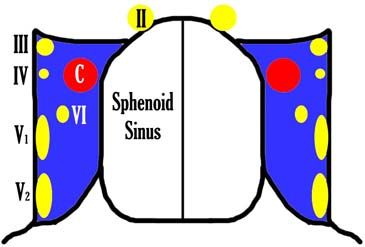
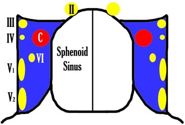

Cavernous sinus
* Định nghĩa:
+ Xoang hang  Hình: Sơ đồ và thành phần trong xoang hang Dây thần kinh sọ số: II, III, IV, nhánh V1,2, dây số VI và động mạch cảnh trong (C)
+ Xoang hang

Hình: Sơ đồ và thành phần trong xoang hang
Dây thần kinh sọ số: II, III, IV, nhánh V1,2, dây số VI và động mạch cảnh trong (C)